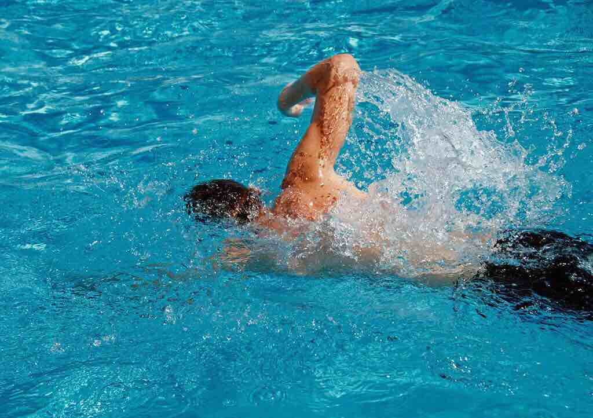
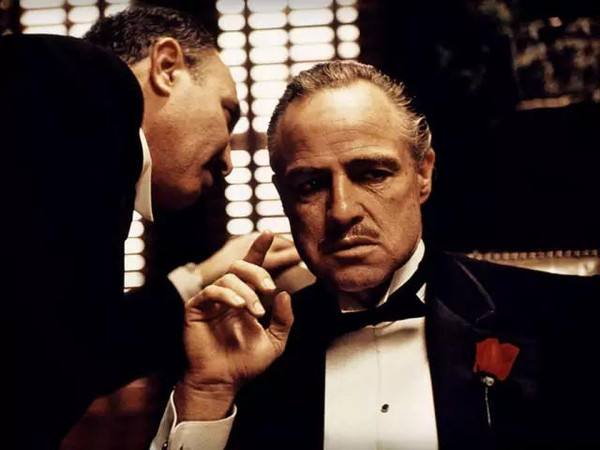

I played basketball when I was a young kid and I have joined many games to improve myself
This is my favorite sports, I like to swim in pool like a fish
I also like to wathch movies especially The Godfather.The Godfather is a 1972 American crime film based on the 1969 novel by Mario Puzo and directed by Francis Ford Coppola from a screenplay by Puzo, Coppola and an uncredited Robert Towne. The fictional story, which spans ten years from 1945 to 1955, chronicles the development of the Italian American Corleone crime family.
